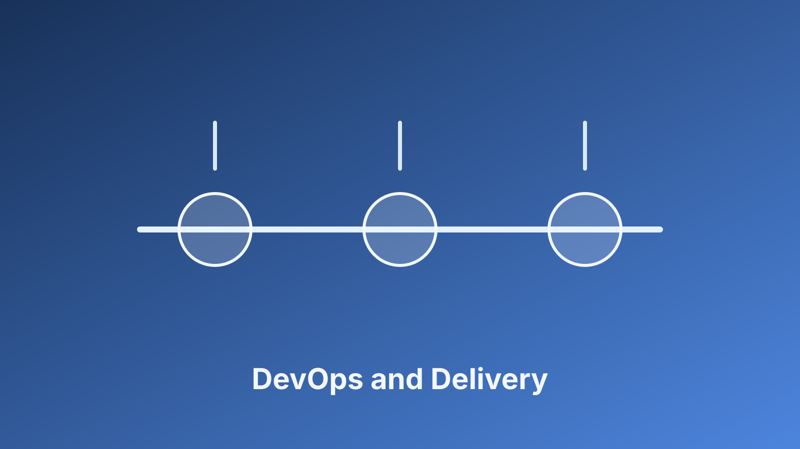

Define Guardrails Before the Sprint Starts
Teams lose time when release criteria are negotiated at the end of a sprint. I prefer setting non-negotiables at planning: code review requirements, automated test thresholds, dependency scanning, and rollback expectations. These guardrails reduce rework because engineers know the quality bar before they build.
The U.S. Cybersecurity and Infrastructure Security Agency calls out secure-by-design engineering as a core practice for modern software producers in its Secure by Design guidance. Operationally, that means security checks should be default workflow, not a separate approval lane.
Measure Flow and Risk Together
I track two categories in the same review: delivery flow (lead time, release frequency) and risk health (critical findings, unresolved exceptions). Looking at only speed can hide growing exposure; looking only at findings can hide process drag. Together, they tell the truth about how the system is operating.
In Titan delivery work, this combined view helped us keep release rhythm steady while reducing late-stage defects. The practical lesson is simple: secure cadence is not about slowing down, it is about making quality and risk visible early enough to act.